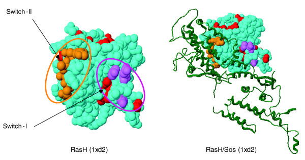
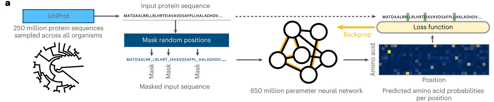
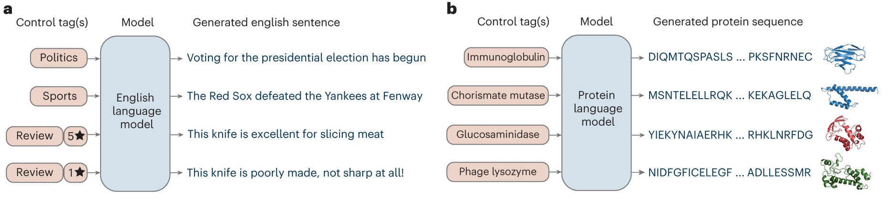
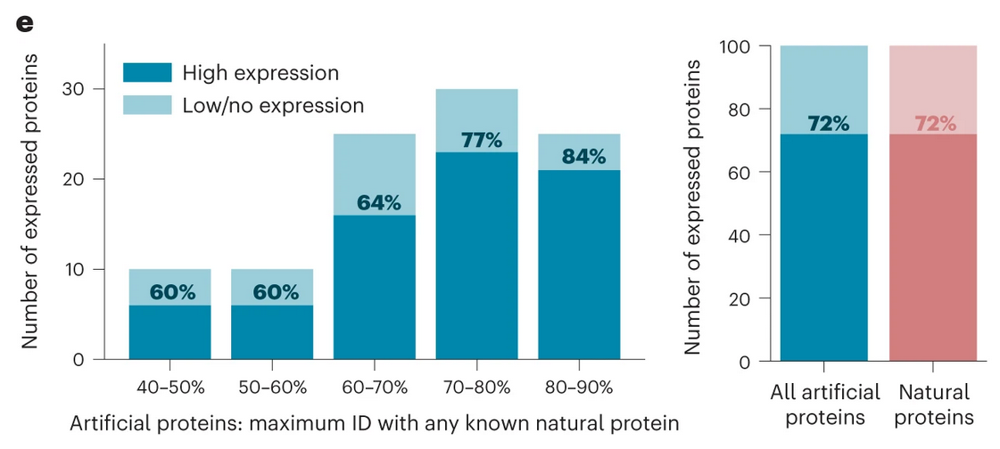

Models of protein sequence
Alex Lee, 2023-10-17
The amount of sequencing data is growing (extremely) quickly
NVIDIA estimates 40 exabytes of data by 2025!–driven by decreases in cost.

Observational genomic studies of “natural experiments” in human population extremely useful
Ex: discovery of PCSK9 as being protective against heart disease, ApoE from familial studies.
However: genome is big (~3 billion base pairs) and the space of possible mutations is large.
What if we could use computational sequence models to help us decipher the effect of mutations?
Models of protein sequence are a natural area to study
- We know much more about proteins and their function than we do regulatory DNA
- Proteins suggest a natural target (for therapeutics) [ie, many proteins (not all) are “druggable”]
- Quite a lot of protein mutation data out there in databases, such as ClinVar, gnomAD (Genome Aggregation Database), UK BioBank etc.
Protein sequence models have typically focused on simple probabilistic models of amino acid frequency
The mainstay tool of these analyses has been a multiple-sequence alignment.
- collect sequences corresponding to a protein (across species, individuals, etc.)
- align them using computational approaches (ex DP w/ Needleman-Wunsch etc.)
Conservative/non-conservative terminology refers to (broad sense) notions of similarity across species or between individuals [ie T/S conservative site largely the same across species]
What do mutation sites indicate?

Each ball is an amino acid (AA); AAs colored in orange/purple are the ones in the sequence alignment denoted by different colors; hashes are sites that have high entropy, and are likely to be functionally relevant.
Early models (like in this paper, from 2007) focused on creating probabilistic models of specific sites based on entropy (\(\sum_i p_i\ \mathrm{ln}(p_i)\)) at a given site (column of alignment matrix) and clustering sequences based on their entropy at different sites.
A key assumption of this idea is basically the idea that if a residue (individual AA) is commonly observed in the population then it has high “fitness”. Any statements made are population level about a given sequence alignment.
More sophisticated models and applications to disease
Marks lab at Harvard pioneers more complex probabilistic models based on stat. mech.
Previous method focuses on marginal probabilities at specific sites \(\mathrm{\mathbf{h}_i}(\sigma_i)\) [ie a fixed effect] for a given protein alignment.
Now we have an overall model of a given sequence \(\sigma\): \(P(\sigma)\ =\ \frac{1}{Z} \mathrm{exp}\ E(\sigma)\), where:
\[E(\sigma) = \sum_i \mathbf{h}_i (\sigma_i) + \sum_{i<j} \mathbf{J}_{ij} (\sigma_i, \sigma_j)\]
What’s significant about this change is that now we can score a given sequence on it’s overall likelihood.
EV energy scores correlate well with disease variation annotations and functional measurements
New applications also introduced by sequence-level modeling:
- deep mutational scanning experiments screen many genetic variants for an observed phenotype (ie does the protein glow more or less than other mutated proteins)
- more evidence that probabilistic models are generally useful
An update for the machine learning era: EVE
VAE models learn highly accurate ClinVar scores, even with only a couple hundred sequences per protein family.
Simple gaussian mixture on top of VAE probabilities gives ~90% correlation, ~99% AUC specific examples like TP53.
The state-of-the-art: masked language models

No sequence alignment needed: (pre-)training is over huge amounts of data–although model is relatively small (MM-15B param)
Embeddings from ESM can be easily fine tuned into highly accurate protein structural predictions
New applications of protein language models: forward de novo design
Note: people have been doing de novo design for ~20-30 years now, but it’s only in the last ~10 that it’s been possible with really extensive automation.
First paper: Ali Madani’s ProGen
Model is autoregressively trained from “control tags” (sort of like ) to generate different sequences.
First paper: Ali Madani’s ProGen

Most importantly, proteins designed using this method can actually be expressed in cells comparably to natural proteins – a big milestone
Second paper: Brian Hie’s work (no fancy method name)
Targets antibody generation using ESM1b/1v using a sort of simulated annealing-like process.
Basically, select protein candidates as based on probability from some model: for a length \(L\) protein given by \(\mathbf{x}\), with \(i \in [1, 2, ..., L]\)
\[
p(x^{'}_i | \mathbf{x}) > p(x_i | \mathbf{x})
\]
where \(x_i\) denotes the wild-type residue (or the “start” residue at a given site \(i\)) and \(x^{'}_i\) is a particular substitution at that site.
DL methods are enabling other applications in biology:

DNA Language models emerging (Benzegas et al. (2023), from Song lab at Berkeley): could be used to decode effect of regulatory DNA.
Builds on history of sequence modeling to predict transcription (Kelley lab at Calico, Enformer etc.)
So far, not so many big applications of these technologies for forward design of elements in synthetic biology. Maybe MPRA’s?
Diffusion models another frontier of protein modeling
First paper from Anand and Achim (2022) and then followed by RFDiffusion from Baker lab at UW (Watson et al., 2023 Nature Biotechnology). Here is a trajectory for a binder designed against insulin receptor (IPD website)
Conclusions
Protein sequence modeling field has moved quite quickly in last five years.
Moving from simpler statistical models to more complex models, ultimately to learn energy functions / likelihood scorers.
Robust performance on variant scoring tasks–unclear what the field will do now that we have these strong general representation learners. So far analyses focused on protein-protein interaction, general prediction tasks (like stability).